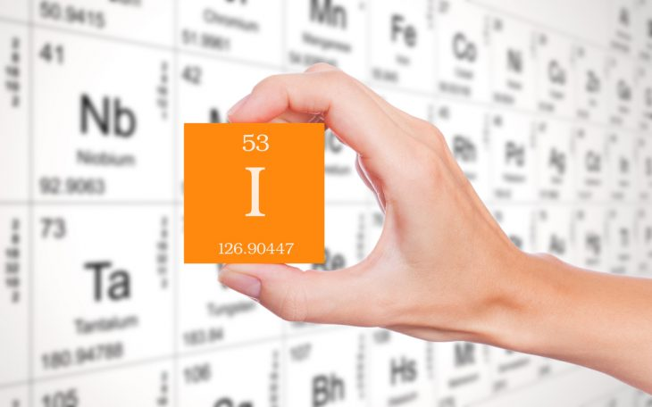
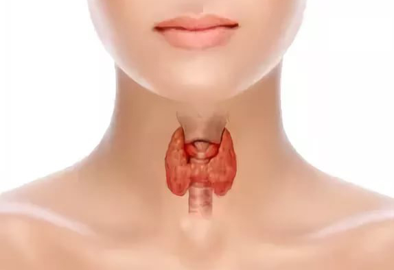
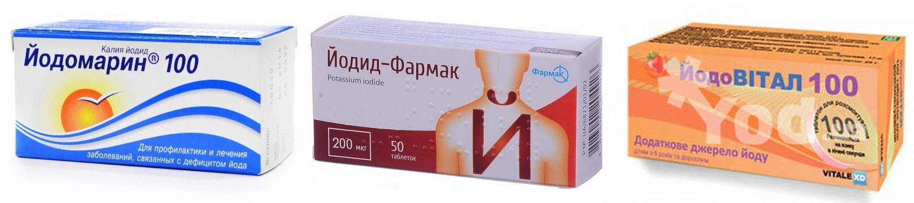
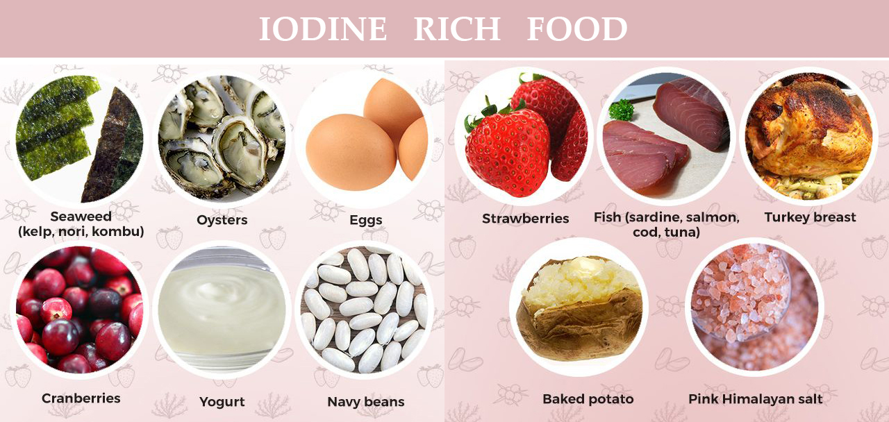

Автори: Світлана Рижук, Наталія Величко, Зоряна Мацях

Кому з нас не призначали препаратів йоду? Є такі? Правда?
Ніхто не буде сперечатись про користь Йоду, але є дуже чіткі інструкції, яких потрібно дотримуватись, щоб не зашкодити собі і малюку в період грудного вигодовування.
Насправді, ситуація не така вже й весела, адже Йод часто лише прикидається корисним. Давайте розглянемо детальніше медичні та фармацевтичні дослідження.
Йод належить до життєвонеобхідних елементів, його маса в організмі людини становить 10–25 мг. Найбільше йоду містять щитовидна і надниркова залози. Він міститься у м’язах, шкірі, кістках, печінці, нирках, головному мозку, крові.
Із крові йод легко проникає у різні органи й тканини та відкладається у ліпідах. Він надходить у організм з їжею та питною водою. Багато йоду містять морські продукти. У меншій кількості він міститься у молоці, яйцях, сирі. Також елементний йод легко засвоюється шкірою, слизовими оболонками, а у пароподібному стані — легенями. Щитовидна залоза поглинає із крові, що проходить через неї, неорганічні сполуки йоду, а в кров потрапляють утворені у щитовидній залозі гормони тироксин і трийодтиронін.
Як мікроелемент, йод потрібен людині для утворення гормонів тироксину та трийодтироніну, що синтезуються фолікулярними клітинами щитоподібної залози.

Йод, який входить до складу гормонів щитовидної залози, в організмі людини бере участь у регуляції енергетичного обміну, температури тіла, швидкості біохімічних реакцій обміну білків, жирів, водно-електролітного обміну, метаболізму деяких вітамінів, процесів росту і розвитку організму, включаючи нервово-психічний розвиток. Крім того, йод підвищує споживання кисню тканинами.
Нестача йоду в організмі людини призводить до йододефіциту — комплексного розладу здоров'я, що є одним з найпоширеніших у світі неінфекційних захворювання
Проте, не так все просто.
Спочатку розберемось з йодом, який ми вживаємо з їжею чи приймаємо як біологічну добавку.
Відсутність чи нестача йоду в організмі може призвести до проблем із гормонами щитовидної залози. Добова потреба йоду в організмі залежить від віку, фізіологічного стану і ваги людини.
До йододефіцитних регіонів частіше належать гірські масиви й місцевості, віддалені від моря. Саме в цих регіонах спостерігається нестача йоду в ґрунтах. Люди, які живуть на узбережжях морів й океанів, жителі острівних держав, як правило, вживають в їжу велику кількість багатих на йод морепродуктів, тому вони, здебільшого, не страждають на дефіцит йоду. Вживання йодованої солі вважається найбільш ефективним підходом до профілактики йододефіциту.

У профілактичних цілях використовують такі препарати: йодомарин, йодид, йодовітал.
Рекомендовані профілактичні дози йоду:
Надмірним вважається поступлення в організм більше 300 мкг йоду щоденно тривалий період часу. Такі високі дози йоду можуть викликати йодіндукований тиреотоксикоз, особливо небезпечний цей стан для населення, яке проживає в умовах йодного дефіциту.
В дітей все складніше. Йод, який потрапляє зовні, за умови нормального йодного забезпечення засвоюється лише на 10% (як і в дорослих), і цей відсоток змінюється в бік збільшення, коли потреби організму зростають. Джерелом йоду для новонароджених і дітей першого року життя є грудне молоко. Якщо мама стабільно одержує дози, які переважають фізіологічні потреби, то надлишок йоду може спричинити гіпотиреоз, проблеми з щитовидною залозою у дитини. Адже йод не всмоктується зворотньо в кров, а залишається в грудному молоці і потрапляє до дитини. Якщо надлишок мікроелементу надходить постійно в великих кількостях, тоді включається механізм, який блокує захоплення йоду (ефект Вольфа-Чайкова). Таким чином зупиняється синтез Т3 і Т4 і розвивається транзиторний гіпотериоз. В нормі через 2 тижні після настання ефекту блокування синтезу гормонів знімається і функція щитовидної залози відновлюється, але це трапляється не завжди. Якщо феномен Вольфа-Чайкова не минув, дефіцит гормонів поглиблюється, що негативно впливає на нервову систему дитини та інщі органи і системи. Найбільш вразливі недоношені і діти з малою масою тіла.

Препарати йоду, які застосовують у медичній практиці, поділяють на 5 груп:
Серед 9 радіоізотопів йоду найчастіше використовуються І-131, який випромінює як бета-, так і гамма-промені і має період напіврозпаду 8 днів, I-125, який випромінює тільки гамма-промені, з періодом напіврозпаду 60 днів, I-123, який, як правило, забруднений I-124, надаючи йому при розпаді характеристики, аналогічні I-131.
Радіофармпрепарати з ізотопами йоду випускають у різних лікарських формах. Близько 30 препаратів, помічених різними ізотопами йоду, застосовують із лікувально-діагностичною метою. Це, в першу чергу, натрію йодид NaI, який застосовують для визначення функціонального стану щитовидної і слинної залоз, дослідження йодного обміну, а також для лікування тиреотоксикозу, тиреотоксичного зобу і метастазів раку щитовидної залози. Різноманітні йодорганічні препарати, які містять радіоізотопи йоду (йодбензойна кислота, тироксин, трийодтиронін, альбумін сироватки крові людини та ін.) застосовують для радіодіагностичних досліджень серцево-судинної системи, печінки, нирок, легень, ШКТ, крові, кісткового та головного мозку. Найчастіше у цих препаратах застосовують ізотоп І-123 для досліджень in vivo. У медичній практиці препарати елементного йоду застосовують зовнішньо і всередину. Зовнішньо як антисептичний, подразливий і відволікаючий засіб при запальних захворюваннях шкіри і слизових оболонок, всередину — при атеросклерозі, хронічних запальних процесах дихальних шляхів, при захворюванні на сифіліс, гіпертиреоз, для профілактики і лікування ендемічного зоба, при отруєннях солями Меркурію і Плюмбуму.
Доведена тератогенність йодиду натрію-131 у людини. Оскільки вплив навіть малих доз непередбачуваний, препарат протипоказаний при вагітності. Ревю 1999 року аналізувало вплив натрію йодиду-131 на щитоподібну залозу плода після призначення його матері на ранніх термінах вагітності. Лікування після 10 тижня вагітності призводить до токсичного впливу на залозу плода. Деякі дослідники рекомендують уникати вагітності протягом року після закінчення лікування.
Молочна залоза активно поглинає іони йоду, особливо в період лактації. При призначенні радіоактивного йоду необхідно припинити грудне вигодовування, а відновити можна лише через 2 місяці після, закінчення лікування І 131.
Різні йодовмісні контрастні препарати для обстеження (рентгенівське випромінювання, КТ) вважаються сумісними з грудним вигодовуванням, оскільки вони швидко виділяються з невеликим вивільненням йоду або майже не виділяються, а не метаболізуються і практично не абсорбуються в ротовій порожнині. Враховуючи низьку розчинність ліпідів йодованого контрасту, менше 1% дози, введеної матері, вони просто не потрапляють в грудне молоко.
Тепер про зовнішнє застосування препаратів.
Популярні препарати на основі йоду:
В довіднику Томаса Хейла (довідник сумісності препаратів з грудним вигодовуванням) йод віднесено до препаратів з високим ризиком, на сайті e-lactancia.org (сайт, де можна перевірити сумісність діючої речовини ліків з грудним вигодовуванням) препарати йоду позначені оранжевим кольором, що означає високий ризик небажаних для дитини наслідків. LactMed інформує, що використання йоду у матері під час годування груддю може спричинити тимчасовий гіпотиреоз у грудних дітей, особливо в географічних районах, де відсутній йод, та радить звести до мінімуму застосування йоду зовнішньо.
В інструкції Бетадину вказано про особливості застосування під час вагітності та годування грудьми:
Повідон-йод не має тератогенної дії. Препарат протипоказано застосовувати після 2-го місяця вагітності та у період годування груддю. Йод проникає через плацентарний бар’єр і може проникати у грудне молоко. На період лікування необхідно припинити годування груддю, там же повідомляється, що, як правило, внаслідок довготривалого застосування препарату вміст йоду у крові швидко підвищується. Концентрація повертається до початкового рівня через 7-14 діб після останнього застосування препарату. У пацієнтів з нормальною функцією щитовидної залози збільшення запасів йоду не викликає клінічно значущих змін тиреоїдного гормонального статусу.
Абсорбція і ниркова екскреція повідону-йоду залежить від його молекулярної маси, а оскільки вона коливається у межах 35000-50000, то можлива затримка речовини.
Об’єм розподілу відповідає приблизно 38 % маси тіла, час біологічного напіввиведення після вагінального застосування становить близько 2-х діб. Нормальний загальний рівень йоду у плазмі крові становить приблизно 3,8-6 мкг/дл, а рівень неорганічного йоду – 0,01-0,5 мкг/дл.
Виводиться препарат з організму переважно через нирки з кліренсом від 15 до 60 мл/хв залежно від рівня йоду у плазмі крові та кліренсу креатиніну (у нормі: 100-300 мкг йоду на 1 г креатиніну).
Повідон-йод містить 1 мг активного йоду в 1 мл.
Розчин йоду спиртовий містить 5 г йоду на 100 мл рідини. В одній краплі міститься 1250 мкг або 50 мг в 1 мл йоду, що в декілька раз переважає добову норму. Звичайно, що треба враховувати всмоктування при зовнішньому нанесені, шкіра це чи слизова оболонка, інтактна ділянка чи пошкоджена. Але й для обробки поверхні використовують набагато більше ніж 1 мл.
Розчин Люголя містить 30 мг йоду в 1г це також в декілька раз перевищує добову потребу.
А тепер, давайте проаналізуємо, скільки разів ще в пологовому жінкам, які годують грудьми, призначають йодові антисептики у вигляді розчинів та свічок? Крім того, необґрунтовано призначають препарати йоду під час вагітності (понад профілактичну дозу 250 мкг), обробляють йодовмісними антисептиками операційне поле під час кесарського розтину. Чи враховується при цьому ймовірний вплив на дитину? У світовій практиці описані випадки впливу йодовмісних антисептиків на тиреоїдний статус новонароджених дітей. В немовлят розвивався транзиторний гіпотериоз. У дітей, яким обробляли пуповинний залишок повідон-йодом, були хибнопозитивні результати скринінгу вродженого гіпотериозу.
Чому йод прийнято вважати панацеєю і призначати по декілька препаратів в різних лікарських формах (розчини, спреї, супозиторії, мазі) а, іноді, навіть одночасно?
Як можна вплинути на ситуацію, що склалась? – Завжди можна просити підібрати альтернативне лікування, аргументуючи своє бажання несумісністю препарату з грудним вигодовуванням. На щастя, в 21 столітті є багато альтернатив.
Звісно, завжди краще не хворіти, але, якщо потрібно лікуватись, то краще бути обізнаним щодо ризиків та небажаних наслідків.
В цій статті дуже багато питань, і це не тому, що ми не знаємо на них відповідей, а для того, щоб кожен, хто прочитає, дав СВОЮ відповідь.
Сподіваюсь, що цей допис спонукає задуматися про підхід до лікування, переглянути та удосконалити методи терапії, маю надію, що кваліфіковані фахівці доповнять тему і в цієї історії буде продовження.
Джерела: